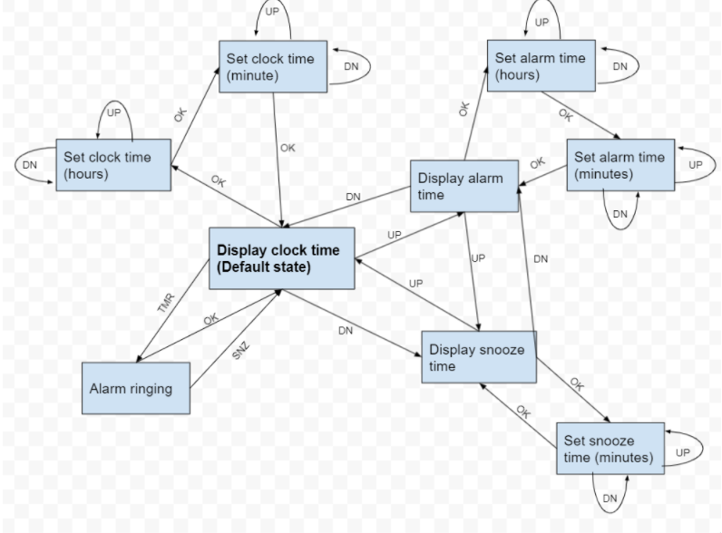
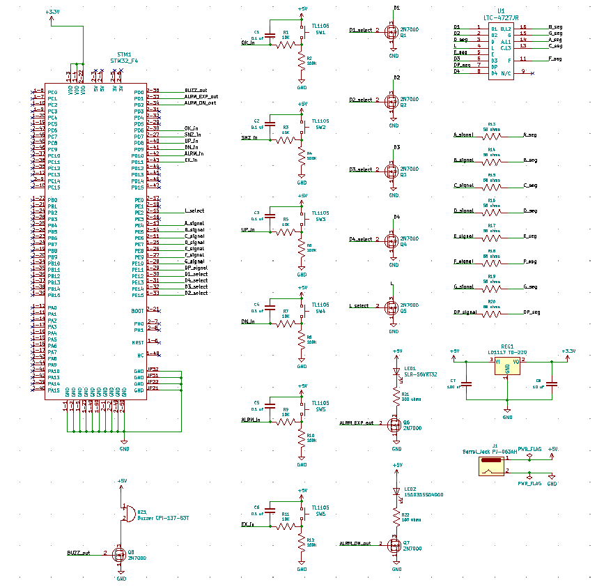
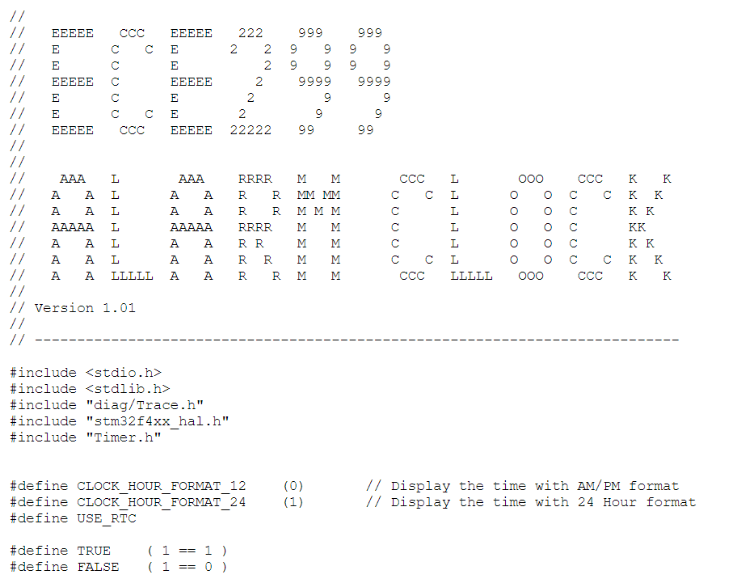
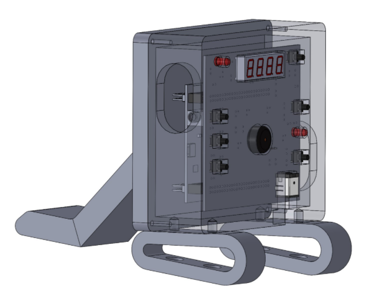

Custom Alarm Clock
PCB
We used an STM32f407 Discovery board as our microcontroller, push buttons to provide user input, and the LTC-4727JR quad seven-segment display to display the time. To signal that the alarm has expired, we used a CPI-137-83T buzzer to generate noise and a SLR-56VRT32 5mm LED. To signal if the alarm is active, we used a 151031SS04000 3mm LED. To supply power to the board, we will use a PJ-063AH barrel jack connector.
The buzzer requires a 5V supply voltage to produce an 83 dB noise (roughly a typical alarm volume) and will draw 6mA at 5V The 5mm LED has a typical forward voltage of 2V, at which it will draw 10mA The 3mm LED has a typical forward voltage of 2V, at which it will draw 20mA Each segment in the 7-segment display has a forward voltage of 1.95V when drawing 18mA The STM32 requires a supply voltage of 1.8V-3.6V. As we will be relying on the digital I/O pins to provide 3V, we will aim to maximize this supply voltage while assuring it does not pass the 3.6V maximum.
In addition to component requirements, we decided to add our own requirements to improve user experience, as follows:
The user should be able to configure the snooze time to any minute length less than an hour (excluding 0 minutes). The user should be able to disable an upcoming alarm without having to modify the alarm time setting. The user should be able to disable an upcoming alarm without having to modify the alarm time setting. An extra push button should be added in case we decide to modify the user interface (UI) after our initial testing. Push buttons should be debounced using hardware.
  Code
The software has three main components: a real-time clock with an alarm function, a recurring timer-based interrupt to control the display and a finite state machine to provide a UI.
To provide the clock and alarm functionality, we used the built-in RTC in the STM32’s HAL library. This was configured to a 24-hour format for simplicity. The alarm and clock were both defaulted to 00:00 when the device is turned on, and both could be configured to any 24-hour time. When the clock time is turned to the alarm time, an interrupt is triggered which enables the buzzer and LED.
To control the display, a recurring interrupt was triggered every 4ms (250 Hz) to determine what number to display on which digit of the display. By mapping each digit to a number 0-4 and using a global variable called “displayedDigit” which is incremented each iteration of the recurring interrupt, we are able to cycle through the digits fast enough so that the clock appears to display them all simultaneously. As there are 5 digits on the display (D1, D2, L, D3, D4) and only one can be displayed at a time, each digit is displayed at a rate of 50 Hz.
The UI was implemented using finite state machine logic. 8 states were used to provide the ability to view and edit the current clock, alarm, and snooze settings, as well as a state for when the alarm is ringing. Depending on the current state, pressing any of the OK, UP, DN or SNZ buttons may cause a state transition or edit parameters such as alarm time, clock time, or snooze time (see lines 430-720 below for more details). The current state also affects which of the clock, alarm, or snooze settings are being displayed.
Housing
The enclosure for the Alarm Clock was designed in SolidWorks. The design involved 4 structural components (front, back with a stand, and two feet) and 8 socket head cap screws for fastening the parts together. The design was modeled using the PCB, STM board, and header mounts as a constraint.